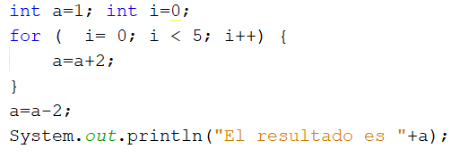
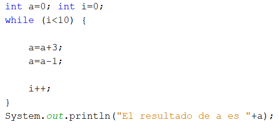
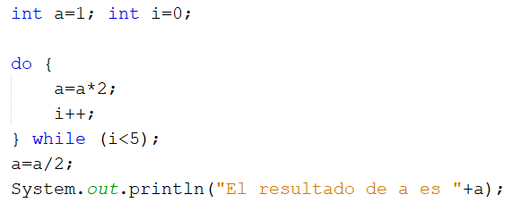

Pregunta de Elección Múltiple Única Respuesta Pregunta 1.- El ciclo Do while es el único que permite acceder por lo menos una vez sin validar la expresión o condición. Respuestas Opción 1 Verdadero Opción 2 Falso Retroalimentación Opción correcta Incorrecto Solución Opción correcta (Retroalimentación) Incorrecto (Retroalimentación) Pregunta 2.- El resultado de la variable a en el siguiente código es  Respuestas Opción 1 8 Opción 2 9 Opción 3 10 Opción 4 7 Retroalimentación Incorrecto Opción correcta Incorrecto Incorrecto Solución Incorrecto (Retroalimentación) Opción correcta (Retroalimentación) Incorrecto (Retroalimentación) Incorrecto (Retroalimentación) Pregunta 3.- El resultado de la variable a en el siguiente código es  Respuestas Opción 1 20 Opción 2 18 Opción 3 16 Opción 4 22 Retroalimentación Opción correcta Incorrecto Incorrecto Incorrecto Solución Opción correcta (Retroalimentación) Incorrecto (Retroalimentación) Incorrecto (Retroalimentación) Incorrecto (Retroalimentación) Pregunta 4.- El resultado de la variable a en el siguiente código es  Respuestas Opción 1 12 Opción 2 14 Opción 3 16 Opción 4 10 Retroalimentación Incorrecto Incorrecto Opción correcta Incorrecto Solución Incorrecto (Retroalimentación) Incorrecto (Retroalimentación) Opción correcta (Retroalimentación) Incorrecto (Retroalimentación) Pregunta 5.- Si se aplica como condición la palabra true dentro de While el ciclo queda infinito. Respuestas Opción 1 Verdadero. Opción 2 Falso. Retroalimentación Opción correcta Incorrecto Solución Opción correcta (Retroalimentación) Incorrecto (Retroalimentación)